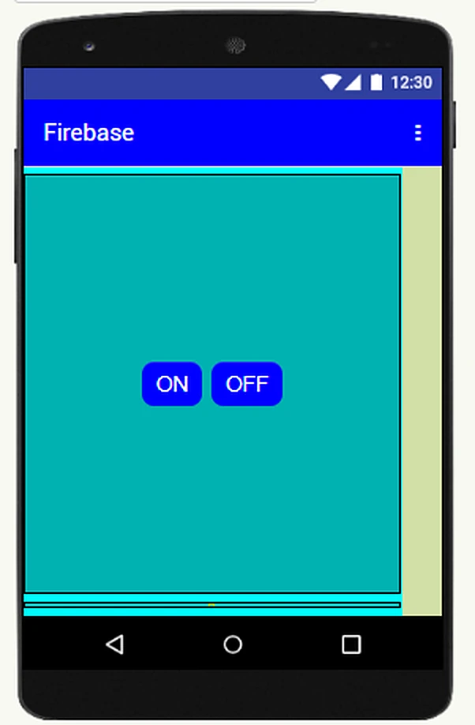
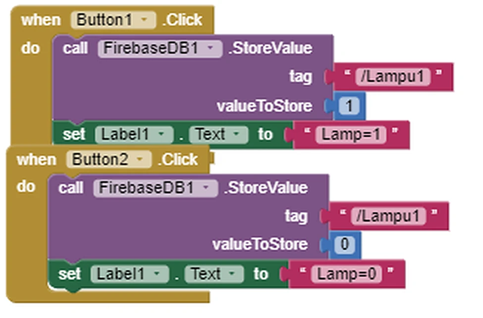
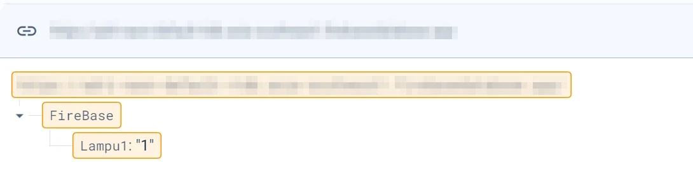
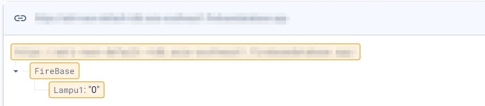

IoT Lamp Control with MIT App Inventor & Firebase
IoT practicum project: an Android app built in MIT App Inventor sends ON/OFF commands to a Firebase Realtime Database, which stores the lamp state as a simple value (1 or 0) for the IoT hardware to act on.
Project Overview
Background / Problem Statement
Switching a load from a phone needs three parts to agree on one command: a mobile interface, a cloud service and the hardware that acts on it. This practicum built that chain end to end on a small scale.
Project Objectives
Build a mobile controller without text-based code, store the lamp command in a cloud database, show the commanded state inside the app, and confirm every change in the Firebase console.
Main Idea / System Concept
Two buttons write a value to the tag /Lampu1 in Firebase: 1 for ON and 0 for OFF. The database holds the single current state, so the app and the hardware never need to talk to each other directly.
Application / Use Case
The same pattern scales to remote switching of lighting, pumps and relays, and is a starting point for monitoring dashboards that read sensor values back from the cloud.
Technical Details
The app is built entirely from visual blocks. Each button stores a value in Firebase and updates a label, so the person using the app sees the state they just commanded.
Hardware Used
- Item IoT trainer board
- Item Laptop for development and monitoring
- Item Android phone / emulator for the app
Software Used
- Item MIT App Inventor (Designer + Blocks)
- Item FirebaseDB component
- Item Firebase Realtime Database console
Programming Language(s) / Tools
Architecture / System Diagram
ON / OFF buttons
/Lampu1 = 1 or 0
from the stored value
Workflow Explanation
Design the interface
Laid out a single screen in the App Inventor Designer with two buttons, ON and OFF, and a label that reports the current command.
Write the blocks
On Button1 click, FirebaseDB1 stores the value 1 under the tag /Lampu1 and the label shows "Lamp=1". On Button2 click, it stores 0 and the label shows "Lamp=0".
Sync through Firebase
Each press writes to the Realtime Database, which keeps the latest command as the shared state for the lamp.
Verify in the console
Checked the database tree after every press: Lampu1 reads "1" after ON and "0" after OFF, confirming the app and the cloud stay in step.
Project Gallery
The app interface, its logic blocks and the database proof for both states.




Results & Outcomes
Achievements
Built a working phone-to-cloud controller in App Inventor and confirmed both states, ON and OFF, in the Firebase Realtime Database.
Testing Data
Every press was checked in the console: Lampu1 changed to "1" for ON and "0" for OFF, matching the label shown in the app.
Skills Gained
Event-driven block programming, cloud data modelling with tags and values, and the practice of verifying each link of an IoT chain separately.
Improvements & Future Development
Read the state back so the app shows the lamp's real status, add more channels (Lampu2, Lampu3), and add sensor readings and authentication to the database rules.